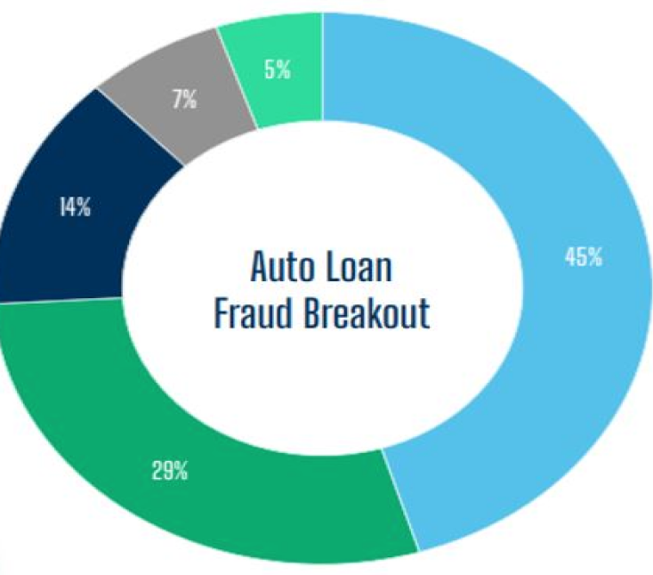
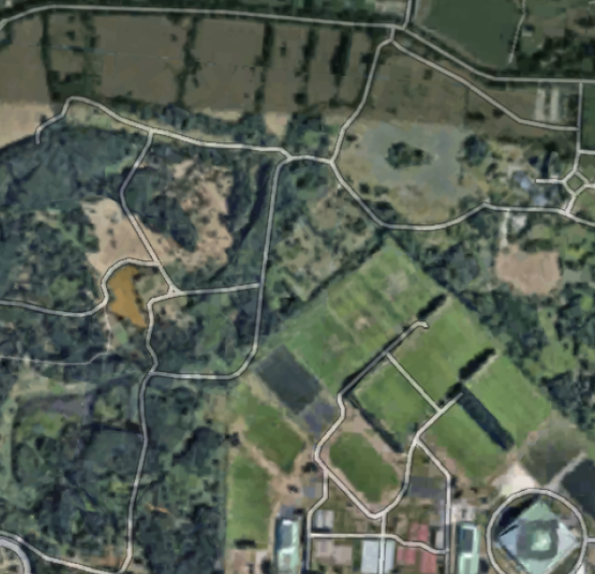

KRITHIKA SINGH
University of California, Berkeley
HOME
ABOUT
PROJECTS
CONTACT
MY PROJECTS

Fraud Detection
Worked on data cleaning by removing duplicate records of Auto dealership info from a dataset containing 100,000 records.
Worked on feature analysis and identified the top 10 features indicative of Early Payment Default (EPD) for some specific auto finance lenders.
Used Open AI model to extract word vectors and consolidate similar data for employers and occupations. Utilized Snowflake, SQL, and Python.
Cryptocurrency Value Evaluation
Web scraped cryptocurrency forums and built a BERT model on forum texts for cryptocurrency value evaluation.
Worked with a team of six high schoolers to write a research paper detailing the process and results of our work.
Read our paper here!
Poverty Detection
Detected areas of poverty in Uganda using satellite images with computer vision and Python.
Worked on feature extraction and determined that the “nightlight” feature set was optimal, achieving 89% accuracy using this feature.
